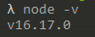

Entorno de desarrollo - Vue.js
Instalación de herramientas
Las herramientas básicas que vamos a utilizar para esta tecnología son:
- Visual Studio Code
- Scoop.sh
- Nodejs
- Quasar CLI
Visual Studio Code
Lo primero de todo es instalar el IDE para el desarrollo front.
Te recomiendo utilizar Visual Studio Code, en un IDE que a nosotros nos gusta mucho y tiene muchos plugins configurables. Puedes entrar en su página y descargarte la versión estable.
Scoop.sh
Muchas de las herramientas que necesitarás a lo largo de tu estancia en los proyectos, no podrás instalarlas por temas de permisos de seguridad en nuestros portátiles. Una forma de evitar estos permisos de seguridad y poder instalar herramientas (sobre todo a nivel de consola), es utilizando a Scoop.sh.
Para instalar scoop.sh tan solo necesitas abrir un termina de PowerShell (OJO que es PowerShell y no una consola de msdos) y ejecutar los siguientes comandos:
Set-ExecutionPolicy -ExecutionPolicy RemoteSigned -Scope CurrentUser
Invoke-RestMethod -Uri https://get.scoop.sh | Invoke-Expression
Esto nos instalará scoop.sh en nuestros portátiles. Además de la instalación, y debido a las restricciones de seguridad que tenemos, necesitaremos activar el lessmsi para que las aplicaciones que necesitemos instalar no intenten ejecutar los .exe de instalación, sino que descompriman el zip. Para ello deberemos ejecutar el comando:
scoop config use_lessmsi true
A partir de este punto, ya tenemos listo el portátil para instalar herramientas y aplicaciones.
Nodejs
El siguiente paso será instalar el motor de Nodejs. Para esto vamos a usar scoop.sh ya que lo tenemos instalado, y vamos a pedirle que nos instalé el motor de Nodejs. Abriremos una consola de msdos y ejecutaremos el comando:
scoop install main/nodejs
Con esto, scoop ya nos instalará todo lo necesario.
Creación de proyecto
Generar scaffolding
Lo primero que haremos será generar un proyecto mediante la librería "Quasar CLI" para ello ejecutamos en consola el siguiente comando:
npm init quasar
Este comando detectará si tienes el CLI de Quasar instalado y en caso contrario te preguntará si deseas instalarlo. Debes responder que sí, que lo instale.
Una vez instalado, aparecerá un wizzard en el que se irán preguntando una serie de datos para crear la aplicación:

Y tendremos que elegir lo siguiente:
What would you like to build?
App with Quasar CLI, let's go!Project folder
tutorial-vuePick Quasar version
Quasar v2 (Vue 3 | latest and greatest)Pick script type
TypescriptPick Quasar App CLI variant
Quasar App CLI with VitePackage name
tutorial-vueProject product name
Ludoceta TanProject description
Proyecto tutorial Ludoteca TanAuthor
<por defecto el email>Pick a Vue component style
Composition APIPick your CSS preprocessor
Sass with SCSS syntaxCheck the features needed for your project
ESLintPick an ESLint preset
PrettierInstall project dependencies?
Yes, use npm
Arrancar el proyecto
Cuando todo ha terminado el propio scaffolding te dice lo que tienes que hacer para poner el proyecto en marcha y ver lo que te ha generado, solo tienes que seguir esos pasos.
Accedes al directorio que acabas de crear y ejecutas
npx quasar dev
Esto arrancará el servidor y abrirá un navegador en el puerto 9000 donde se mostrará la template creada.
También podemos navegar nosotros mismos a la URL http://localhost:9000/.
Info
Si durante el desarrollo del proyecto necesitas añadir nuevos módulos al proyecto Vue.js, será necesario resolver las dependencias antes de arrancar el servidor. Esto se puede realizar mediante el gestor de dependencias de Nodejs, directamente en consola ejecuta el comando npm install y descargará e instalará las nuevas dependencias..
Proyecto descargado
Cuando se trata de un proyecto nuevo recien descargado de un repositorio, recuerda que será necesario resolver las dependencias antes de arrancar el servidor. Esto se puede realizar mediante el gestor de dependencias de Nodejs, directamente en consola ejecuta el comando npm install y descargará e instalará las nuevas dependencias.